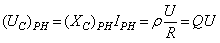
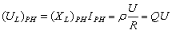
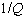
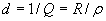

3.7.2.3. Параметры последовательного колебательного контура
| Резонансная цепь (последовательный колебательный контур) характеризуется следующими параметрами: резонансная частота, характеристическое сопротивление, добротность. Решив уравнение (3.105) (XL)PH - (XC)PH = 0 относительно частоты ω, получим угловую резонансную частоту контура
Тогда циклическая резонансная частота
Характеристическое (волновое) сопротивление ρ последовательного контура равно его индуктивному или ёмкостному сопротивлению при резонансе:
Характеристическое сопротивление последовательного колебательного контура составляет десятки и сотни ом.
Добротность Q контура - это отношение характеристического сопротивления ρ контура к резистивному R при резонансе, т. е.
Чем больше ρ, тем добротнее контур, тем будут yже частотные характеристики тока и напряжений на элементах контура. В радиотехнических контурах добротность Q = 100...1000, в электротехнических цепях добротность Q обычно не превышает 3...5. Добротность Q показывает, во сколько раз напряжение на зажимах конденсатора UC (или напряжение на зажимах индуктивной катушки UL при малом сопротивлении Rк) больше напряжения питания U, т. е.
где  и .
Величину , обратную добротности, называют затуханием контура. . |
|||||||||||